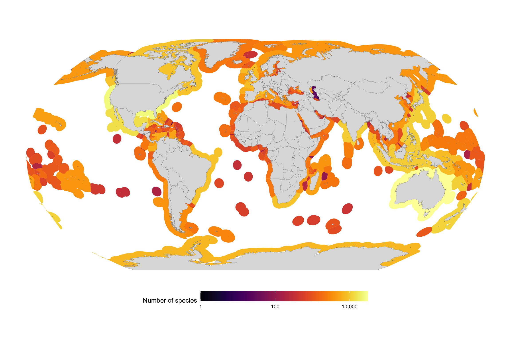
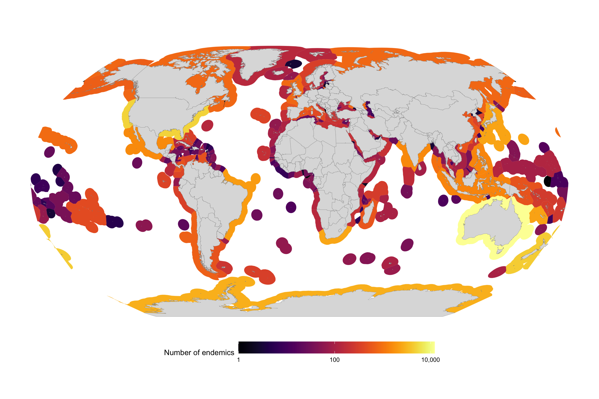

The goal of this notebook is to find species which have been detected in only one EEZ according to OBIS.
The code for this notebook is available at https://github.com/iobis/notebook-endemics.
Here we generate species lists by EEZ. We use a dataset of precalculated H3 grid cells by EEZ, which is based on the Marine Regions EEZ layer.
library(arrow)
library(dplyr)
library(h3)
library(h3jsr)
h3_res <- 7
# aggregate OBIS data by H3 cell and species
row_to_geo <- function(row, res) {
geo_to_h3(c(row$decimalLatitude, row$decimalLongitude), res)
}
gridded_species <- open_dataset("~/Desktop/temp/obis_20230726.parquet") %>%
group_by(decimalLongitude, decimalLatitude, speciesid, species) %>%
summarize() %>%
collect() %>%
as.data.frame() %>%
mutate(h3 = row_to_geo(., h3_res)) %>%
group_by(speciesid, species, h3) %>%
summarize()
# read gridded EEZ dataset and join with gridded species data
gridded_eez_species <- open_dataset("eez_h3/eez_h3_res7.parquet") %>%
select(h3 = h3_index, eez = GEONAME) %>%
as.data.frame() %>%
left_join(gridded_species, by = "h3") %>%
filter(!is.na(speciesid))Aggregate by EEZ:
species_by_eez <- gridded_eez_species %>%
group_by(speciesid, species, eez) %>%
summarize() %>%
arrange(eez, species)
eez_richness_stats <- species_by_eez %>%
group_by(eez) %>%
summarize(n_species = n()) %>%
arrange(eez)
endemics <- species_by_eez %>%
group_by(speciesid, species) %>%
summarize(n_eez = n(), eez = first(eez)) %>%
filter(n_eez == 1) %>%
select(-n_eez) %>%
arrange(eez, species)
eez_endemics_stats <- endemics %>%
group_by(eez) %>%
summarize(n_endemics = n())library(sf)
library(ggplot2)
library(viridis)
library(rnaturalearth)
library(rnaturalearthdata)
sf_use_s2(FALSE)
eezs <- read_sf("eez_gpkg/eez_v11.gpkg") %>%
select(GEONAME) %>%
st_simplify(0.05, preserveTopology = FALSE) %>%
left_join(stats, by = c("GEONAME" = "eez"))
world <- ne_countries(scale = "medium", returnclass = "sf")ggplot() +
geom_sf(data = eezs, aes_string(fill = "n_species", color = "n_species", geometry = "geom"), lwd = 0.04) +
scale_color_viridis(option = "inferno", na.value = "white", name = "Number of species", trans = "log10", guide = "none") +
scale_fill_viridis(option = "inferno", na.value = "white", name = "Number of species", trans = "log10", labels = scales::comma) +
geom_sf(data = world, fill = "#dddddd", color = "#888888", lwd = 0.1) +
theme(
panel.grid.major.x = element_blank(),
panel.grid.major.y = element_blank(),
panel.grid.minor.x = element_blank(),
panel.grid.minor.y = element_blank(),
panel.background = element_blank(),
axis.text.x = element_blank(),
axis.text.y = element_blank(),
axis.ticks = element_blank(),
axis.title.x = element_blank(),
axis.title.y = element_blank(),
legend.position = "bottom",
legend.key.width = unit(2, "cm")
) +
xlab("") + ylab("") +
coord_sf(crs = "+proj=robin +lon_0=0 +x_0=0 +y_0=0 +ellps=WGS84 +datum=WGS84 +units=m +no_defs" )
ggplot() +
geom_sf(data = eezs, aes_string(fill = "n_endemics", color = "n_endemics", geometry = "geom"), lwd = 0.04) +
scale_color_viridis(option = "inferno", na.value = "white", name = "Number of endemics", trans = "log10", guide = "none") +
scale_fill_viridis(option = "inferno", na.value = "white", name = "Number of endemics", trans = "log10", labels = scales::comma) +
geom_sf(data = world, fill = "#dddddd", color = "#888888", lwd = 0.1) +
theme(
panel.grid.major.x = element_blank(),
panel.grid.major.y = element_blank(),
panel.grid.minor.x = element_blank(),
panel.grid.minor.y = element_blank(),
panel.background = element_blank(),
axis.text.x = element_blank(),
axis.text.y = element_blank(),
axis.ticks = element_blank(),
axis.title.x = element_blank(),
axis.title.y = element_blank(),
legend.position = "bottom",
legend.key.width = unit(2, "cm")
) +
xlab("") + ylab("") +
coord_sf(crs = "+proj=robin +lon_0=0 +x_0=0 +y_0=0 +ellps=WGS84 +datum=WGS84 +units=m +no_defs" )